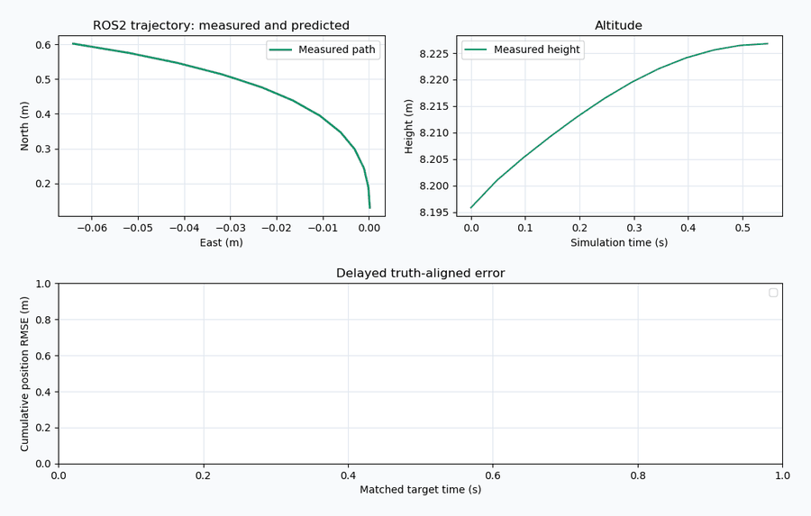
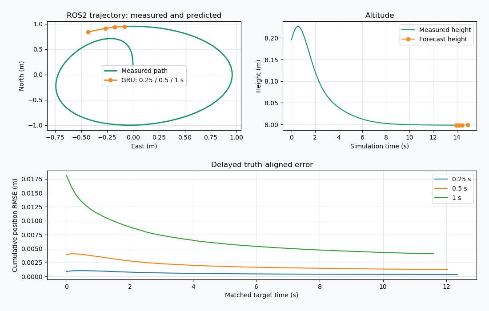
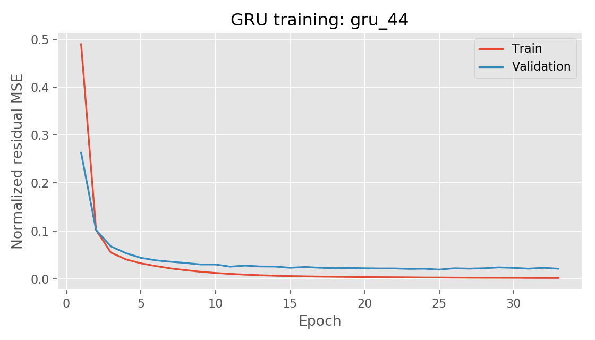
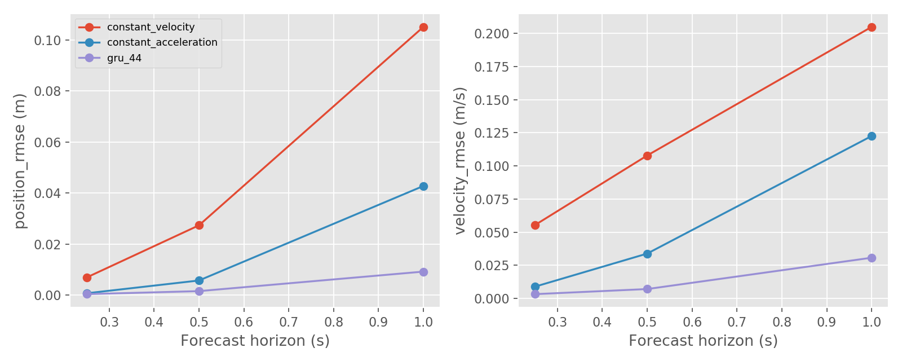
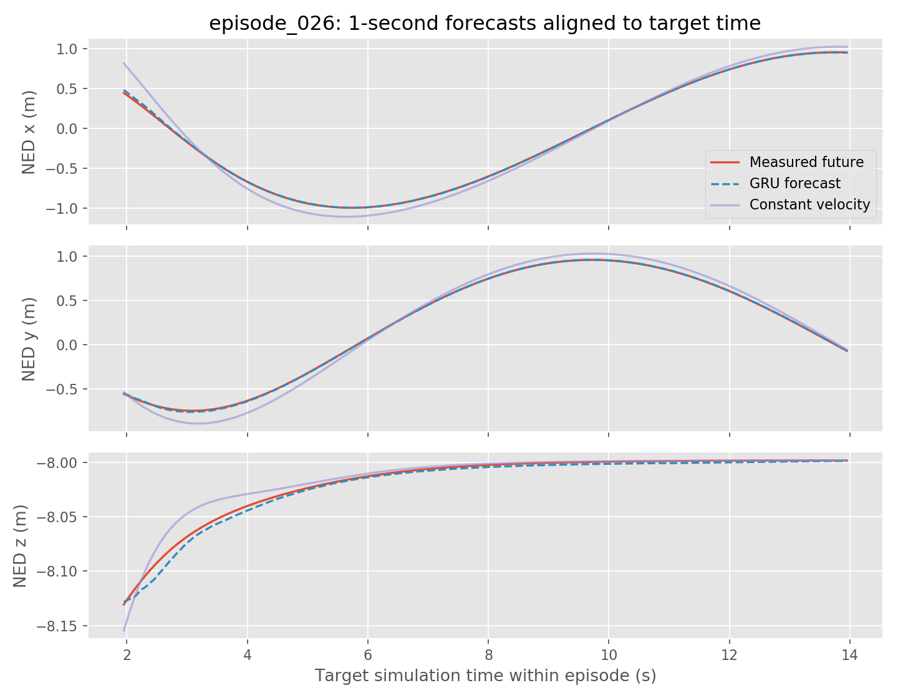
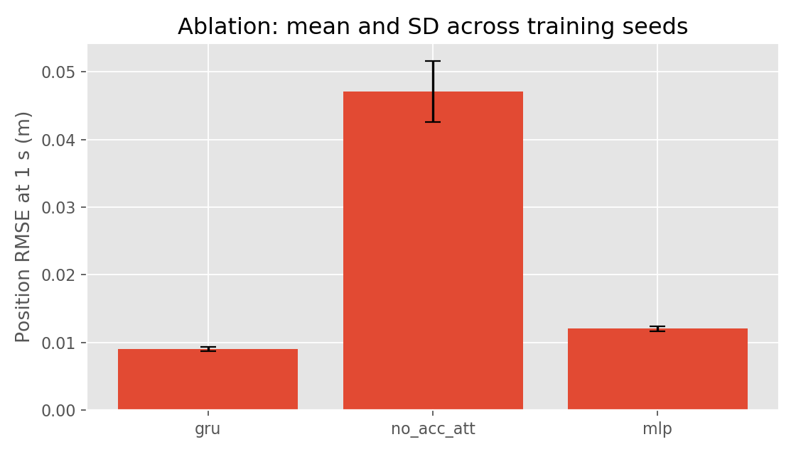

基于 GRU 的无人机多时域飞行状态预测与 ROS2 在线误差分析
本页记录一个可独立复现的无人机飞行状态预测实验：用一层的 GRU（门控循环单元）网络，从过去 1 秒的飞行状态历史预测未来 0.25 / 0.5 / 1.0 秒的位置与速度；预测结果通过 ROS2 话题实时发布，并在目标时刻的真实状态到达后自动对齐、计算误差。
网络并不直接回归绝对位置，而是回归相对恒速模型的残差。这个设计让网络只需学习"运动偏离匀速直线运动的那一部分"，在小样本、弱机动的飞行数据上更容易训练。
全部结果都在 Ubuntu 20.04 + ROS2 Humble + AirSim Blocks 场景的仿真环境中实测得到；表格里的每个数字都可以用第 10 节的命令重新跑出来。

1. 任务定义与设计取舍
输入：最近 20 帧飞行状态（20 Hz 采样，约 1 秒），每帧 16 维。
输出：未来 3 个时域（0.25 s / 0.5 s / 1.0 s），每个时域给出位置（3 维）与速度（3 维），共 18 维。
约束：不使用未来的控制指令。这意味着模型只能依赖状态自身的时间演化——这对无人机是现实的：飞控指令在预测时不可知。
三个关键取舍：
| 取舍 | 选择 | 理由 |
|---|---|---|
| 预测目标 | 预测残差而非绝对位置 | 恒速基线已能解释大部分运动；残差的量级小一到两个数量级，网络只需拟合偏差 |
| 序列模型 | GRU 而非 LSTM / Transformer | 单层 48 隐单元已足够（10,386 参数），CPU 单样本推理 p50 0.79 ms、p95 1.32 ms；更深的模型在小数据上过拟合 |
| 评估方式 | 目标时刻对齐而非固定 lead time | 状态以不规则间隔到达，只有按真实目标时刻插值才能得到无偏误差 |
1.1 功能与入口
main.py 是统一入口，main.sh 负责加载 ROS 环境并激活虚拟环境后转交执行：
| 阶段 | 入口 | 输出 |
|---|---|---|
| 仿真采集 | bash main.sh collect --host <IP> |
data/raw/episode_*.csv / .json |
| 数据集 | bash main.sh prepare |
data/processed/*.npz、manifest.json |
| 神经网络 | bash main.sh train --output models/retrained |
models/<variant>_<seed>/model.pt、loss.csv |
| 独立测试 | bash main.sh evaluate --output results/xxx |
metrics.csv、episode_metrics.csv、4 张图 |
| 构建 | bash main.sh build |
install/、build/、log/ |
| ROS2 回放 | bash main.sh demo |
/uav/state、预测路径、误差与可视化 |
| ROS2 实时 | bash main.sh live --host <IP> |
同上，数据来自 AirSim RPC |
| 自检 | bash main.sh doctor |
artifacts/environment.json |
demo 用仓库内的真实回放数据 data/sample/episode_026.csv，能完整演示 状态发布 → ROS2 → GRU → 预测发布 → 未来真实值到达 → 误差发布 → 绘图 这条链路；live 直接从 AirSim RPC 取状态。只有 collect 会控制仿真无人机，回放与只读桥接都不下发飞控指令。
2. 仿真环境与运行步骤
2.1 环境
| 项 | 配置 |
|---|---|
| 宿主 | Windows 11 + VMware Workstation 16 |
| 虚拟机 | Ubuntu 20.04.6 LTS，6 核 / 8.5 GB，kernel 5.15 |
| ROS | ROS2 Humble（/opt/ros/humble，为 Python 3.8 构建） |
| 仿真器 | AirSim 1.8.1，Blocks 场景，SimpleFlight 控制器 |
| Python | 3.8.10，venv --system-site-packages |
| 深度学习 | PyTorch 2.4.1+cpu，numpy 1.24.4，matplotlib 3.1.2 |
| 推理设备 | 纯 CPU（无 CUDA） |
2.2 安装
cd ~/ros2/src/air/state_prediction
source /opt/ros/humble/setup.bash
/usr/bin/python3 -m venv --system-site-packages ~/uav_prediction_env
source ~/uav_prediction_env/bin/activate
python -m pip install -r requirements.txt # CPU 版 torch，约 195 MB
bash main.sh doctor # 环境自检，输出 artifacts/environment.json
bash main.sh build # colcon 构建
doctor 会逐一导入 12 个必需模块（numpy、torch、matplotlib、rclpy、std_msgs、lark、launch_ros 及 6 个 colcon 插件），任何一个缺失都会直接报错退出，不会带着残缺环境继续构建。
安装时的四个常见问题：
ensurepip缺失：说明系统没装python3-venv，先sudo apt install python3.8-venv。- 没有图形窗口：
topic_plot依赖 Tk，需要python3-tk（import tkinter可自检）。 doctor报launch_ros: No module named 'lark'：在模块目录、已激活的 venv 里重跑pip install -r requirements.txt即可，lark==1.1.9已在依赖表中；不要用跳过launch_ros检查的方式绕过。- Conda 环境冲突：Conda 的
python3无法导入 ROS2。保留原环境，另建一个基于/usr/bin/python3的 venv，再跑同一个 requirements 命令。
虚拟环境的优先级由 main.sh 决定：UAV_ENV > 当前已激活的 VIRTUAL_ENV > ~/uav_prediction_env；ROS_SETUP 可覆盖 ROS 发行版的 setup 文件。换目录重建时，旧的 build/、install/、log/ 不要复制过来，否则会指向旧路径。
2.3 回放演示
回放不需要启动仿真器，也不需要下载任何场景：
bash main.sh demo
这条命令启动三个节点：state_source（回放 CSV 状态）、state_predictor（加载 GRU、发布预测）、topic_plot（Tk 窗口实时绘图）。窗口内容自上而下为：
- 左上：轨迹平面图，绿色为实测路径，橙色为三个时域的未来位置预测；
- 右上：高度曲线，含未来高度预测；
- 下方：三个时域随目标时间累积的位置 RMSE 曲线。
回放结束后窗口保持显示，按 Ctrl+C 退出。

2.4 为什么是 Tk 绘图而不是 RViz2
这台 Ubuntu 20.04 上的 ROS2 Humble 是既有环境，rviz2 启动即失败：
rviz2: error while loading shared libraries: libOgreMain.so.1.12.1: cannot open shared object file
缺的是 Ogre 1.12 运行库。因此默认用包内的 topic_plot（TkAgg）直接从 ROS2 话题绘图：
- 只依赖 Python + matplotlib，不需要 Ogre；
- 话题消费方式与 RViz 完全一致，不影响验证结论；
rviz/prediction.rviz仍然保留，供图形依赖完整的 ROS2 环境使用。
需要 RViz2 时用 bash main.sh demo --rviz。没有为了这个故障去换机或重装整个虚拟机——环境是既有的，能验证什么就验证什么，不在文档里假装 RViz 可用。
2.5 采集与实时接入
只有在需要重新采集或实时接入时才需要 AirSim 客户端：
python -m pip install -r requirements_airsim.txt
bash main.sh collect --host <AirSim 主机 IP>
bash main.sh live --host <AirSim 主机 IP>
collect 会真正控制仿真无人机飞行五类轨迹；live 与 demo 只读取状态，不下发任何飞控指令。
两点必须注意：
config/airsim_settings.json里的192.168.239.1与PredictionDrone是示例值，换机器必须按实际的主机地址、车辆名和端口调整，不要照抄。- 重新采集的数据不保证逐值重复原始实验——采集受实时性、控制器状态和网络延迟影响。要复现本文表格中的数字，请用仓库自带的
assets/flight_corpus.zip，不要重新采集。
2.6 仿真器选择与验证范围的边界
新部署推荐使用维护者提供的 OpenHUTB 模拟器发布页，选择支持无人机的场景与 AirSim 兼容接口。
必须写清楚的一点：本文所有训练数据、曲线和截图来自 Windows Blocks / AirSim 1.8.1 的实际运行，尚未在 OpenHUTB 模拟器上重新采集与验证。AirSim RPC 客户端可以直接复用，但场景、机型与接口版本需要按实际配置核对。把本文的误差数字套用到其他场景时需要重新评估。
2.7 回放与源码的关系
data/sample/episode_026.csv 同时被 demo 回放与第 7.1 节的对比图使用，因此文档中的图表与可运行的演示是同一条轨迹，便于对照检查。
3. 数据定义
3.1 坐标系
| 量 | 坐标系 | 单位 |
|---|---|---|
位置 px/py/pz |
世界 NED（北-东-地） | m |
线速度 vx/vy/vz |
世界 NED | m/s |
线加速度 ax/ay/az |
世界 NED | m/s² |
姿态四元数 qw/qx/qy/qz |
机体 FRD → 世界 NED | — |
角速度 wx/wy/wz |
机体 FRD | rad/s |
训练与误差计算全部在 NED 下进行；只在 ROS2 发布 Odometry / Path 时转换为 ENU，以符合 ROS 的 REP-103 约定。分量对应关系为
四元数按 复合转换。
3.2 每帧字段
每个回合的 CSV 逐行记录：
| 字段 | 含义 |
|---|---|
timestamp_ns |
采集时钟，整数纳秒（误差对齐依赖它，不能截断成毫秒） |
px/py/pz |
位置（NED，m） |
vx/vy/vz |
线速度（NED，m/s） |
ax/ay/az |
线加速度（NED，m/s²） |
qw/qx/qy/qz |
姿态四元数（FRD → NED） |
wx/wy/wz |
角速度（机体 FRD，rad/s） |
| 命令速度 | 本回合下发的期望速度，仅作记录，不进入模型输入 |
collision |
碰撞标志，采集时用于拒收 |
| 采集时钟 | 用于检查采样间隔与超时 |
模型只用前 16 维（位置、速度、加速度、姿态、角速度）。
3.3 轨迹与规模
五类轨迹：直线往返、圆形、8 字、升降、平滑停走。振幅、频率、相位由记录种子决定。
- 30 个独立回合，8,430 条真实 AirSim 状态；
- 采样中位间隔约 0.051 s，插值重采样到 20 Hz；
- 所有回合碰撞数为 0，时间戳单调，最大间隔超过 0.15 s 的回合被拒绝。
3.4 划分与窗口
按完整回合划分，而不是按窗口随机划分——否则相邻窗口会同时出现在训练集和测试集中，造成信息泄漏：
| 集合 | 回合 | 窗口数 |
|---|---|---|
| 训练 | 20（每类 4） | 4,820 |
| 验证 | 5（每类 1） | 1,205 |
| 测试 | 5（每类 1） | 1,205 |
测试集固定为 episode_025 ~ episode_029。标准化参数只从训练窗口拟合。
4. 计算原理
4.1 状态向量与输入构造
记第 帧的完整状态为
输入是长度 的窗口 。
为消除绝对位置带来的平移差异（同一动作在不同位置应当等价），对窗口内每一帧的位置做相对末端平移：
四元数在输入前先做符号连续化：若 则整体取反，保证插值与求均值时不被符号跳变污染。
4.2 标准化
对每个特征维度 ，用训练窗口的均值 与标准差 做仿射标准化：
标签同样标准化。标准化参数随检查点一起保存，推理时复用，避免训练与部署不一致。
4.3 物理基线
恒速模型（CV）：假设未来速度不变，
恒加速度模型（CA）：假设未来加速度不变，
这两个基线不是"陪跑"的对照组，而是残差学习的分母：网络学习的是真实值相对 CV 的偏差。
4.4 GRU 的更新方程
单层 GRU，隐状态 ，输入 。下面按本模块实际使用的 PyTorch nn.GRU 约定书写：
有两处极易写反，这里以 PyTorch 的实现为准：
- 重置门作用在隐藏态线性变换的结果上，即 ，而不是先把 乘上 再做线性变换。Cho 等人 2014 年的原始定义是后者，两者并不等价（偏差项的位置不同）。
- 更新门 加权的是上一时刻隐状态，候选状态分到的是 。
若按原始论文的写法实现，训练出来的模型与本文指标不会一致；第 7 节的全部数字都对应 PyTorch 的实现。
其中 为 logistic 函数， 为逐元素乘。这种"线性插值式"的更新是 GRU 与 LSTM 的关键差别：没有独立的输出门，隐状态直接按门控比例在旧值与候选值之间插值，参数更少、在短序列上更不容易过拟合。
4.5 输出头与残差合成
取末时刻隐状态 过一层线性映射：
输出 18 维 = 3 个时域 × (3 位置 + 3 速度)。最终预测为基线加残差：
其中 是该时域残差标签的均值与标准差（每个时域 6 维）， 表示取出该时域对应的 6 维。
线性层权重与偏置初始化为零，因此训练起点是 CV 基线加上训练集残差均值（1 秒位置约 −5 mm），而不是纯 CV。网络要做的第一件事不是重新发明预测，而是在这个起点上继续变好；这个性质让训练初期的损失不会比物理基线差太多。
4.6 损失函数
标签为残差 ，损失为标准化残差上的均方误差：
即 18 维（3 时域 × 6 分量）标准化残差上的均方误差。按 归一化使三个时域、位置与速度各分量对总损失的贡献可比；否则 1 秒时域的误差会比 0.25 秒大一个数量级，梯度会被它主导。
4.7 评价指标
对第 个分量、所有窗口取平均（本表口径为"窗口 × 分量"平均）：
此外给出矢量 RMSE，它衡量单次预测的整体偏离，不受分量正负抵消影响：
注意：1,205 个测试窗口来自 5 个重叠滑窗回合，不是 1,205 次独立飞行。窗口间强相关，因此统计显著性应看逐回合指标（第 7.2 节），不能把窗口数当样本量。
4.8 在线误差的目标时刻对齐
ROS2 节点的难点不在推理，而在对齐：状态以约 20 Hz 的不规则间隔到达，而预测的目标时刻 几乎不会正好落在某一帧上。
设预测在 发出，目标时刻 。当真实状态首次满足 时，在相邻两帧间线性插值：
插值用位置与速度的前 6 维。位置与速度分别累积，位置 RMSE 为
速度 RMSE 同式，取第 3–6 维。分母乘 3 是因为对三个分量取平均； 是该时域已匹配的预测条数。这个口径与离线评估的"分量平均 RMSE"一致，可以互相对照。
5. 算法流程
5.1 总体流程
SimpleFlight 控制器] -->|collect| B[30 个回合 CSV
8,430 帧] B -->|prepare: 时间戳校验
20 Hz 插值
四元数连续化| C[data/processed/*.npz
4820 / 1205 / 1205] C -->|train: 3 变体 × 3 种子| D[models/*/model.pt
标准化参数随检查点保存] D -->|evaluate| E[metrics.csv
逐回合指标 / 消融] D -->|deploy| F[ROS2 state_predictor] C -->|demo 回放| G[ROS2 state_source] G -->|/uav/state| F F -->|/uav/predicted_path
/uav/forecast
/uav/errors| H[topic_plot 实时绘图]
5.2 训练伪代码
输入: 训练窗口 X ∈ R^(N×20×16), 标签 Y ∈ R^(N×3×6), 种子 s
1 固定随机种子 random/numpy/torch ← s; 开启确定性算法
2 计算基线 B = CV(X) # 恒速预测, 形状同 Y
3 μx, σx ← mean/std(X, axis=(0,1)) # 仅训练集
4 R ← (Y − B − μy) / σy # 标准化残差标签
5 用零权重初始化输出层 ⇒ 初始模型 ≡ CV
6 for epoch = 1..45:
7 for 每个 batch (128 条, 打乱):
8 loss ← MSE( model((X−μx)/σx), R )
9 反传; 梯度裁剪 ‖g‖ ≤ 1.0; Adam(lr=0.002, wd=1e-5)
10 计算验证集损失
11 if 验证损失 < 历史最优 − 1e-5:
12 保存 model.pt(含 μx,σx,μy,σy 与 manifest 哈希)
13 else: 连续 8 轮无改善 → 早停
5.3 在线推理与误差对齐
每个 /uav/state 消息 s_t:
1 若 episode 变化 或 t 回退 或 间隔 > 150 ms → 清空历史与待评估队列
2 对待评估队列中每个 (τ, h, ŷ):
if τ ≤ t: 用 (s_prev, s_t) 线性插值得到 s(τ)
e ← ŷ − s(τ)[0:6]; 累积平方与绝对值; 发布 /uav/errors
3 窗口不足 20 帧 或 距上次预测 < 100 ms → 返回
4 构造历史矩阵 → 相对平移 → 标准化
5 ŷ ← CV(s_t) + σy ⊙ GRU(标准化输入) + μy # 单次前向, CPU p50 0.79 ms
6 发布 /uav/predicted_path, /uav/forecast, /uav/prediction_markers
7 把 (t+h, h, ŷ_h) 三个目标压入待评估队列
6. 训练设置
| 超参数 | 值 |
|---|---|
| 模型 | 1 层 GRU，48 隐单元，输出 18 维 |
| 参数量 | 10,386（GRU 本体 9,504 + 输出头 882） |
| 优化器 | Adam，lr = 0.002，weight-decay = 1e-5 |
| 批量 | 128 |
| 轮数 | 最多 45，验证损失连续 8 轮无改善则早停 |
| 梯度裁剪 | L2 范数 ≤ 1.0 |
| 种子 | 42 / 43 / 44 |
| 部署模型选择 | 仅按验证损失最小，测试集不参与选择 |
| 数据增强 | 无（避免引入不真实的飞行形态） |
消融设置：
no_acc_att：输入只保留位置与速度 6 维，去掉加速度、姿态、角速度——用于验证惯性量与姿态信息的价值；mlp：只取当前帧 16 维过两层 tanh MLP——用于验证历史序列（而非单帧快照）的价值。
7. 实验结果
以下全部数字由本机重新训练与评估得到（bash main.sh train --output models/retrained 后 evaluate），并已与随附部署模型交叉验证：重训的 gru_44 在验证损失（0.0191543847322464）、数据清单哈希与全部测试指标上与仓库随附检查点完全一致，说明训练管线是确定性可复现的。
7.1 测试集主表
5 个测试回合、1,205 个重叠窗口，位置单位 m，速度单位 m/s。
| 模型 | 时域 | 位置 MAE | 位置 RMSE | 速度 MAE | 速度 RMSE |
|---|---|---|---|---|---|
| 恒速 | 0.25 s | 0.004302 | 0.006983 | 0.034223 | 0.055405 |
| 恒速 | 0.5 s | 0.016950 | 0.027381 | 0.066956 | 0.107859 |
| 恒速 | 1.0 s | 0.065469 | 0.105059 | 0.127754 | 0.204840 |
| 恒加速度 | 0.25 s | 0.000416 | 0.000781 | 0.004648 | 0.008948 |
| 恒加速度 | 0.5 s | 0.002950 | 0.005787 | 0.016972 | 0.033891 |
| 恒加速度 | 1.0 s | 0.021354 | 0.042784 | 0.061036 | 0.122541 |
GRU gru_44 |
0.25 s | 0.000287 | 0.000444 | 0.002145 | 0.003305 |
GRU gru_44 |
0.5 s | 0.001026 | 0.001624 | 0.004304 | 0.007145 |
GRU gru_44 |
1.0 s | 0.005363 | 0.009265 | 0.016877 | 0.030767 |
三点观察：
- GRU 在所有 9 个指标上都是最优，包括比恒加速度基线更好——而恒加速度已经是一个相当强的物理模型（1 秒 0.0428 m）。
- 时域越长，相对提升越大：0.25 s 时 GRU 的位置 RMSE 是恒加速度的 0.57 倍，1.0 s 时是 0.22 倍。这说明网络学到的主要不是"下一帧的抖动"，而是机动过程中的曲率变化。
- 速度误差的绝对量级明显大于位置误差（1 秒 0.0308 m/s vs 0.00927 m），因为位置是速度的积分，速度的高频误差在位置上游被平滑掉了。

训练曲线没有出现验证损失反弹后继续下降的典型过拟合形态；9 个模型实际训练 25~45 轮（gru_44 在 33 轮早停，no_acc_att_43 25 轮，其余多在 45 轮或接近上限）。


上图为 episode_026 上 1 秒预测与真实值在目标时刻的对齐对比：GRU 的虚线几乎贴合实测曲线，而恒速基线在转弯处的偏离清晰可见。
7.2 逐回合指标
1 秒位置 RMSE（单位 m）：
| 回合 | GRU gru_44 |
恒速 | 提升倍数 |
|---|---|---|---|
| episode_025 | 0.009227 | 0.108312 | 11.7× |
| episode_026 | 0.005245 | 0.069500 | 13.3× |
| episode_027 | 0.004584 | 0.122126 | 26.6× |
| episode_028 | 0.007935 | 0.082516 | 10.4× |
| episode_029 | 0.015249 | 0.130005 | 8.5× |
| 平均 | 0.009265 | 0.105059 | 11.3× |
回合间差异接近 3 倍（0.0046 ~ 0.0152 m）。episode_029 最差，因为它包含较多快速转向；episode_027 最好，轨迹以平稳圆周为主。只看平均值会掩盖这个分布——报告结论时应当给出区间。
7.3 消融实验
三个种子（42/43/44）在 1 秒时域上的位置 RMSE：
| 变体 | 均值 ± 标准差 (m) | 相对完整 GRU |
|---|---|---|
gru（完整输入） |
0.008992 ± 0.000303 | — |
no_acc_att（去加速度/姿态/角速度） |
0.047095 ± 0.004532 | 差 5.2× |
mlp（仅当前帧） |
0.012029 ± 0.000348 | 差 1.34× |

结论：
- 姿态与加速度信息不可替代：去掉它们后误差放大 5.2 倍，退化到几乎与恒加速度基线（0.0428 m）同一水平。这说明 GRU 的增益主要来自利用机体姿态与惯性量推断机动趋势。
- 历史序列有增益但幅度有限：单帧 MLP 只差 1.34 倍，因为在本实验的规则轨迹上，当前状态本身就携带了大部分未来信息。这个结论不能推广到随机遥控或强扰动场景——那些情况下历史才是关键。
- 种子稳定性：
gru与mlp的种子间标准差只占均值的 3.4% 与 2.9%；no_acc_att达到 9.6%，说明去掉惯性量后模型对初始化更敏感——这也是它退化得更厉害的一个侧面证据。
7.4 ROS2 在线回放
回放 episode_026（281 条状态），在线节点自身统计的误差：
| 时域 | 匹配次数 | 位置 RMSE (m) | 速度 RMSE (m/s) | 位置 MAE (m) |
|---|---|---|---|---|
| 0.25 s | 77 | 0.000214 | 0.001480 | 0.000137 |
| 0.5 s | 75 | 0.000656 | 0.002181 | 0.000428 |
| 1.0 s | 72 | 0.002182 | 0.007039 | 0.001744 |
匹配次数略少于预测次数，原因是回放末尾发出的最后几个预测，其目标时刻超出了数据范围，不会有人"兑现"它们——这是预期行为，不是丢失数据。
在线误差小于离线测试集指标（0.0022 vs 0.0093 m @ 1 s），原因有两点：episode_026 本身是较容易的回合（离线逐回合 RMSE 为 0.005245 m），且回放速度平滑、没有重新采集引入的抖动。这个数字不能替代离线评估，它验证的是链路是否打通，而非模型精度。
8. ROS2 节点与话题
| 话题 | 类型 | 内容 |
|---|---|---|
/uav/state |
std_msgs/String |
版本化 JSON：schema_version、整数纳秒时间戳、16 维 NED/FRD 状态、回合号 |
/uav/odometry |
nav_msgs/Odometry |
转换为 ENU/FLU 的位置、姿态与机体系速度 |
/uav/truth_path |
nav_msgs/Path |
实测轨迹（ENU，map 系） |
/uav/predicted_path |
nav_msgs/Path |
当前状态 + 3 个时域预测点 |
/uav/prediction_markers |
visualization_msgs/MarkerArray |
预测点球体 + 文本指标 |
/uav/forecast |
std_msgs/String |
18 维预测值 + 单次推理耗时（ms） |
/uav/errors |
std_msgs/String |
目标时刻到达后的累计 MAE/RMSE 与匹配数 |
保留 JSON 原始纳秒时间戳是有意为之：ROS 的 builtin_interfaces/Time 虽也是纳秒，但经过序列化往返与不同中间件时存在精度与格式差异，而误差对齐依赖于原始采集时钟，不能容忍这种漂移。
| 节点 | 可执行文件 | 职责 |
|---|---|---|
state_source |
state_source |
从 AirSim RPC 或 CSV 读取状态，发布 /uav/state 与 odometry |
state_predictor |
state_predictor |
加载 GRU，推理并发布预测与对齐误差 |
topic_plot |
topic_plot |
从话题实时绘图（无 RViz 依赖） |
启动方式统一走 launch：
ros2 launch state_prediction main.launch.py model:=<绝对路径> csv:=<回放文件>
# 参数: model / csv / host / vehicle / rviz / plot / error_log
没有图形依赖的机器可把 plot:=false rviz:=false，仅通过话题消费结果。
9. 源代码解析
模块共 49 个文件，核心逻辑集中在 prediction/ 下的 6 个模块。
| 文件 | 行数 | 职责与要点 |
|---|---|---|
main.py |
53 | 统一入口，把 doctor/prepare/train/evaluate/build/demo/live 分派到对应模块；demo 自动拼出 launch 参数 |
main.sh |
11 | 加载 ROS 环境 + 激活 venv，再转交 main.py；优先级 UAV_ENV > VIRTUAL_ENV > ~/uav_prediction_env |
course_environment.py |
52 | doctor 逐模块导入检查；build 通过 colcon_core.command.main 构建，不依赖非标准 python -m colcon |
prediction/data.py |
94 | 读回合、校验（时间戳单调、无碰撞、非有限值）、四元数连续化、20 Hz 重采样、按回合划分、生成窗口；features() 做位置相对平移 |
prediction/model.py |
37 | Predictor 三种变体；输出层零初始化；load_predictor 用 weights_only=True 加载，避免反序列化任意对象 |
prediction/train.py |
60 | 标准化、残差标签、Adam、梯度裁剪、早停、保存检查点与配置 |
prediction/evaluate.py |
88 | 两个物理基线 + 所有 models/*/model.pt，输出 metrics.csv / 逐回合指标 / 4 张图；部署模型只按验证损失选 |
prediction/ros_nodes.py |
191 | StateSource（回放/实时）、ForecastNode（推理 + 目标时刻插值对齐 + 累积误差） |
prediction/plot_node.py |
74 | TkAgg 三子图实时绘图，after(250ms) 轮询；RViz 不可用时的替代方案 |
prediction/collect.py |
173 | AirSim RPC 采集五类轨迹，含安全范围检查 |
几个值得说明的实现细节：
窗口不跨回合。 data.py 在单个回合内生成窗口（for index in range(HISTORY-1, len(state)-OFFSETS[-1])），任何窗口及其标签都完整属于同一回合。这避免了跨回合拼接带来的虚假连续性。
校验先于训练。 read_episode 会拒绝：长度不足、非有限值、有碰撞、时间戳非单调、间隔 > 150 ms 的回合。数据问题在入口就被拦下，不会传播到指标里。
零初始化输出层。 nn.init.zeros_(self.head.weight) 与 zeros_(bias) 让模型初始输出为 0，此时预测退化为"CV 基线 + 残差均值"。注意不是严格的纯 CV——残差均值在 1 秒位置约 −5 mm，虽然不大但不是零。这个初始化保证了训练起点不会比物理基线差太多。
部署模型的选择与测试集隔离。 evaluate.py 只用 config.json 里的 best_validation_loss 选模型，测试指标只用于报告。这条规则写死在代码里，不是靠流程纪律保证。
weights_only=True。 检查点只包含张量与基础类型，加载时不允许任意 Python 对象，避免模型文件被替换时的代码执行风险。
10. 复现步骤
在已装好 ROS2 Humble 的 Ubuntu 20.04 上：
cd ~/ros2/src/air/state_prediction
source /opt/ros/humble/setup.bash
source ~/uav_prediction_env/bin/activate
# 1. 环境自检
bash main.sh doctor
# 2. 数据准备（自动解压 assets/flight_corpus.zip 并校验 SHA256）
bash main.sh prepare
# 期望输出: {'train': 4820, 'validation': 1205, 'test': 1205}
# 3a. 用随附部署模型重算指标
bash main.sh evaluate --output results/checkpoint_check
# 期望: 1 秒位置 RMSE = 0.009265
# 3b. 完整重训三种子 + 消融
bash main.sh train --output models/retrained
bash main.sh evaluate --models models/retrained --output results/retrained
# 期望: gru 0.008992±0.000303 / no_acc_att 0.047095±0.004532 / mlp 0.012029±0.000348
# 4. ROS2 回放
bash main.sh build
bash main.sh demo
纯 CPU 环境下 9 个模型（3 变体 × 3 种子）训练总耗时实测 55 秒，单次全量评估约 3.8 秒，单样本推理 p50 0.79 ms / p95 1.32 ms。
11. 局限与适用范围
必须明确说明的边界：
- 单一场景：所有数据来自 AirSim Blocks 场景、规则小范围轨迹、SimpleFlight 控制器。换地图、换控制器、加重力扰动都会改变误差量级。
- 重叠窗口：1,205 个测试窗口来自 5 个回合的滑窗，彼此强相关，不能当作 1,205 次独立试验。因此我们同时给出逐回合指标。
- 未覆盖的工况：强风、碰撞、随机遥控、真实无人机均未评估。毫米级误差只在本实验条件下成立。
- 控制指令不可知：这是任务设定而非缺陷，但意味着突发机动（例如操作手猛打杆）的 1 秒预测必然变差。
- 单场景不构成泛化证据：
mlp在规则轨迹上表现接近 GRU，说明本数据集对序列模型的区分度有限；若要论证 GRU 的普遍优势，需要更复杂、更多样的数据。
12. 维护说明
改动本页或本模块时需要注意：
- 模块在
src/air/state_prediction/，文档在docs/air/state_prediction.md，两者需保持同步； - 导航项在
mkdocs.yml的「空域载具」分组，首页入口在docs/index.md； - 动图必须放在
docs/img/**下——仓库.gitignore忽略*.gif，只对该目录开白名单，放在别处会被静默忽略，页面显示坏图； - 提交前按仓库约定跑
mkdocs serve --livereload自查，并确认没有超出仓库限制的大文件； - 按仓库约定，改动需由另一台机器的其他人复测并同意后才可合并；本文档的所有数字都可以按第 10 节命令复算，便于复测者核对。
data/raw、data/processed 与实验检查点默认被 .gitignore 排除；选定的小模型与样例数据随模块提交。
13. 参考资料
- Cho K., et al. Learning Phrase Representations using RNN Encoder–Decoder for Statistical Machine Translation. EMNLP 2014.（GRU 原始论文）
- Chung J., et al. Empirical Evaluation of Gated Recurrent Neural Networks on Sequence Modeling. 2014.（GRU 与 LSTM 的对比）
- Shah S., et al. AirSim: High-Fidelity Visual and Physical Simulation for Autonomous Vehicles. Field and Service Robotics, 2018.
- ROS 2 Humble 文档：https://docs.ros.org/en/humble/
- ROS REP-103：坐标系与单位约定 https://www.ros.org/reps/rep-0103.html
- PyTorch
torch.nn.GRU文档：https://pytorch.org/docs/stable/generated/torch.nn.GRU.html